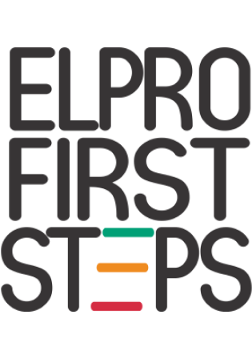

Montessori - Wisdom first Steps
The widely popular Montessori Method of education, given by Dr. Maria Montessori, emphasizes on the
values of human spirit and development of the whole child- physical, social, emotional, cognitive.
The teacher, child, and environment at EFS create a learning triangle. EFS classrooms are
beautifully crafted, learning conductive environments that offer children opportunities to develop
their own capabilities. Each classroom is filled with developmentally appropriate activities that
encourage children to interact with specific learning materials, as well as to work cooperatively
with others.